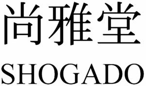

Trade Mark Journal No.2026/007 13 February 2026
WO0000001554965 (16)
Office of origin: Japan
Date of International Registration:18 August 2020
Date of designation in the UK:
7 January 2026

- Class 16
- Stationery; cards [stationery]; pocket memorandum books; note books; writing pads; envelopes; business card paper [semifinished]; letter paper [finished products]; writing materials; writing brushes; ink sticks [Sumi]; seals [stationery]; pencil holders; boxes for pens; adhesive tapes for stationery or household purposes; paper knives [letter openers]; paper cutters [office requisites]; wrappers [stationery]; paper and cardboard; printing paper; paper for writing; paper for making wrapping paper; white paperboard; colored paperboard; postcard paper; washi; calligraphy paper; cardboard; paper for origami; printed matter; calendars; diaries; printed publications; containers of paper, for packaging; boxes of paper or cardboard; bags [pouches] of plastics, for packaging; banners of paper; flags of paper; paintings and calligraphic works; photographs [printed]; photograph stands; pastes and other adhesives for stationery or household purposes; sealing wax; printers' reglets [interline leads]; printing type; addressing machines; ink ribbons; automatic stamp affixing machines; electric staplers for offices; envelope sealing machines for offices; stamp obliterating machines; drawing instruments; typewriters; checkwriters; mimeographs; relief duplicators; paper shredders for office use; franking machines; rotary duplicators; marking templates; decorators' paintbrushes; food wrapping plastic film for household purposes; garbage bags of paper for household purposes; garbage bags of plastics for household purposes; paper patterns; tailors' chalk; hygienic hand towels of paper; towels of paper; table napkins of paper; hand towels of paper; handkerchiefs of paper; shipping tags; printed paper for lot, other than toy.
SHOGADO Co., Ltd.
Representative: Kyoto International Patent Law Office, Hougen-Sizyokarasuma Building,, 37, Motoakuozi-tyo,, Higasinotouin Sizyo-sagaru,, Simogyo-ku, Kyoto-si, Kyoto 600-8091, JAPAN